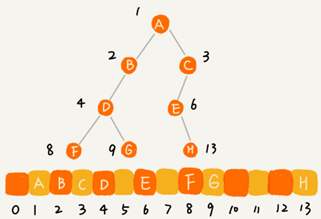
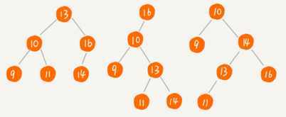
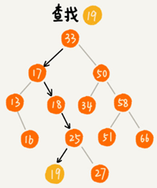
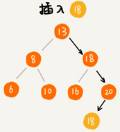
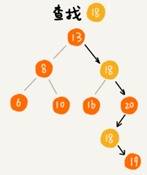

二叉树基础
树（Tree）
树是一种非线性表结构，比线性表的数据结构要复杂得多：
| 树的种类 |
|---|
| 树，二叉树 |
| 二叉查找树 |
| 平衡二叉查找树、红黑树 |
| 递归树 |
“树”的特征：
“树”这种数据结构里面每个元素叫作“节点”；用来连线相邻节点之间的关系叫作“父子关系”。
比如下面这幅图，A 节点就是 B 节点的父节点，B 节点是 A 节点的子节点。B、C、D 这三个节点的父节点是同一个节点，所以它们之间互称为兄弟节点。没有父节点的节点叫根节点，也就是图中的节点 E。没有子节点的节点叫作叶子节点或者叶节点，比如图中的 G、H、I、J、K、L 都是叶子节点。

高度（Height）、深度（Depth）、层（Level）的定义：
节点的高度=节点到叶子节点的最长路径(边数)
节点的深度=根节点到这个节点所经历的边的个数
节点的层数=节点的深度+1
树的高度=根节点的高度
“高度”是从下往上度量，从最底层开始计数计数的起点是 0。
“深度”是从上往下度量，从根结点开始度量计数起点也是 0。
“层数”跟深度的计算类似，不过计数起点是 1。
二叉树（Binary Tree）
二叉树的每个节点最多有两个子节点，分别是左子节点和右子节点。二叉树中，有两种比较特殊的树，分别是满二叉树和完全二叉树。满二叉树又是完全二叉树的一种特殊情况。
二叉树既可以用链式存储，也可以用数组顺序存储。数组顺序存储的方式比较适合完全二叉树，其他类型的二叉树用数组存储会比较浪费存储空间。除此之外，二叉树里非常重要的操作就是前、中、后序遍历操作，遍历的时间复杂度是 O(n)，需要用递归代码来实现。
二叉树是树的一种，特点是每个节点最多有两个子节点，分别是左子节点和右子节点。不过，二叉树有的节点只有左子节点，有的节点只有右子节点：

上图编号 2 的二叉树中，叶子节点全都在最底层，除了叶子节点之外，每个节点都有左右两个子节点，这种二叉树就叫作满二叉树。
编号 3 的二叉树中，叶子节点都在最底下两层，最后一层的叶子节点都靠左排列，并且除了最后一层，其他层的节点个数都要达到最大，这种二叉树叫作完全二叉树。
完全二叉树
完全二叉树和非完全二叉树的区别：

最后一层的叶子节点靠左排列的才叫完全二叉树，如果靠右排列就不能叫完全二叉树了。
存储一棵二叉树有两种方法，一种是基于指针或者引用的二叉链式存储法，一种是基于数组的顺序存储法。
链式存储法中每个节点有三个字段，其中一个存储数据，另外两个是指向左右子节点的指针。从根节点开始可以通过左右子节点的指针，把整棵树都串起来。这种存储方式我们比较常用。大部分二叉树代码都是通过这种结构来实现的。

基于数组的顺序存储法：把根节点存储在下标 i = 1 的位置，那左子节点存储在下标 2 i = 2 的位置，右子节点存储在 2 i + 1 = 3 的位置。以此类推，B 节点的左子节点存储在 2 i = 2 2 = 4 的位置，右子节点存储在 2 i + 1 = 2 2 + 1 = 5 的位置。

如果节点 X 存储在数组中下标为 i 的位置，左子节点的下标为 2 i ，右子节点的下标为 2 i + 1。反过来，下标为 i/2 的位置存储就是它的父节点。通过这种方式，只要知道根节点存储的位置（一般情况下，为了方便计算子节点，根节点会存储在下标为 1 的位置），就可以通过下标计算，把整棵树都串起来。
一棵完全二叉树仅仅“浪费”了一个下标为 0 的存储位置。如果是非完全二叉树，会浪费比较多的数组存储空间：

如果某棵二叉树是一棵完全二叉树，用数组存储无疑是最节省内存的一种方式。因为数组的存储方式并不需要存储额外的左右子节点的指针。
堆其实就是一种完全二叉树，最常用的存储方式是数组。
二叉树的遍历
将二叉树所有节点都遍历打印出来有三种方法，前序遍历、中序遍历和后序遍历。其中，前、中、后序，表示的是节点与它的左右子树节点遍历打印的先后顺序。
- 前序遍历是指，对于树中的任意节点来说，先打印这个节点，然后再打印它的左子树，最后打印它的右子树。
- 中序遍历是指，对于树中的任意节点来说，先打印它的左子树，然后再打印它本身，最后打印它的右子树。
- 后序遍历是指，对于树中的任意节点来说，先打印它的左子树，然后再打印它的右子树，最后打印这个节点本身。

实际上，二叉树的前、中、后序遍历就是一个递归的过程。比如，前序遍历，其实就是先打印根节点，然后再递归地打印左子树，最后递归地打印右子树。
写递推公式的关键就是，如果要解决问题 A，就假设子问题 B、C 已经解决，然后再来看如何利用 B、C 来解决 A。前、中、后序遍历的递推公式：
前序遍历的递推公式：
preOrder(r) = print r->preOrder(r->left)->preOrder(r->right)
中序遍历的递推公式：
inOrder(r) = inOrder(r->left)->print r->inOrder(r->right)
后序遍历的递推公式：
postOrder(r) = postOrder(r->left)->postOrder(r->right)->print rjava伪代码：
void preOrder(Node* root) {
if (root == null) return;
print root // 此处为伪代码，表示打印 root 节点
preOrder(root->left);
preOrder(root->right);
}
void inOrder(Node* root) {
if (root == null) return;
inOrder(root->left);
print root // 此处为伪代码，表示打印 root 节点
inOrder(root->right);
}
void postOrder(Node* root) {
if (root == null) return;
postOrder(root->left);
postOrder(root->right);
print root // 此处为伪代码，表示打印 root 节点
}二叉树遍历的时间复杂度：遍历过程中每个节点最多会被访问两次，所以遍历操作的时间复杂度跟节点的个数 n 成正比，二叉树遍历的时间复杂度是 O(n)。
python代码实现：
from typing import Optional
class TreeNode():
def __init__(self, value):
self.val = value
self.left = None
self.right = None
# 前序遍历
def pre_order(root: Optional[TreeNode]):
if root:
yield root.val
yield from pre_order(root.left)
yield from pre_order(root.right)
# 中序遍历
def in_order(root: Optional[TreeNode]):
if root:
yield from in_order(root.left)
yield root.val
yield from in_order(root.right)
# 后序遍历
def post_order(root: Optional[TreeNode]):
if root:
yield from post_order(root.left)
yield from post_order(root.right)
yield root.val按层次遍历二叉树
除了前、中、后序三种二叉树遍历方式外还有按层遍历这种遍历方式。
实现思路：
按照 广度优先的遍历算法的思路，引入一个队列，根节点先入队列，然后开始从队列头部取元素，每取一个元素则先打印当前元素，然后依次将左右子节点加入队列，若左子节点或右子节点为空则跳过此步。
python实现代码：
from collections import deque
# 层级遍历
def layer_order(root: TreeNode):
if not root: return
queue = deque([root])
while queue:
e: TreeNode = queue.popleft()
yield e.val
if e.left: queue.append(e.left)
if e.right: queue.append(e.right)对应leetcode题目：
https://leetcode.com/problems/binary-tree-level-order-traversal/
给定一个二叉树，返回其按层次遍历的节点值。 （即逐层地，从左到右访问所有节点）。
例如:
给定二叉树: [3,9,20,null,null,15,7],
3
/ \
9 20
/ \
15 7返回其层次遍历结果：
[
[3],
[9,20],
[15,7]
]python代码实现：
def level_order(root: TreeNode):
levels = []
if not root:
return levels
level = 0
queue = deque([root])
while queue:
levels.append([])
for i in range(len(queue)):
node = queue.popleft()
levels[level].append(node.val)
if node.left:
queue.append(node.left)
if node.right:
queue.append(node.right)
level += 1
return levelsn个不同的数据可以构建出多少种不同的二叉树？
给定一组数据，比如 1，3，5，6，9，10。可以构建出多少种不同的二叉树？
答：
根据卡特兰数n个数据能产生$\frac{C_{2n}^{n}}{n+1}=\frac{(2n)!}{n!\cdot(n+1)!}$种二叉树形状
而n个数据能产生$A_n^n=n!$种排列组合
故n个不同的数据能构建出$n!\cdot\frac{(2n)!}{n!\cdot(n+1)!}=\frac{(2n)!}{(n+1)!}$种二叉树
题目中给定数据n=6,故能构建出$\frac{12!}{7!}=12111098=95040$种不同的二叉树。
完全二叉树是其中一种二叉树形状，故能构建出$n!$种完全二叉树，题目中给定数据n=6时，可以构建出720种完全二叉树。
二叉查找树（Binary Search Tree）
二叉查找树是二叉树中最常用的一种类型，也叫二叉搜索树。二叉查找树支持动态数据集合的快速插入、删除、查找操作。
二叉查找树要求，在树中的任意一个节点，其左子树中的每个节点的值都小于这个节点的值，而右子树每个节点的值都大于这个节点的值:

1. 二叉查找树的查找操作
先取根节点，如果它等于要查找的数据就返回。如果要查找的数据比根节点的值小，那就在左子树中递归查找；如果要查找的数据比根节点的值大，那就在右子树中递归查找。

java实现代码：
public class BinarySearchTree {
private Node tree;
public Node find(int data) {
Node p = tree;
while (p != null) {
if (data < p.data) p = p.left;
else if (data > p.data) p = p.right;
else return p;
}
return null;
}
public static class Node {
private int data;
private Node left;
private Node right;
public Node(int data) {
this.data = data;
}
}
}2. 二叉查找树的插入操作
二叉查找树的插入过程需要从根节点开始，依次比较要插入的数据和节点的大小关系。
如果要插入的数据比节点的数据大，并且节点的右子树为空，就将新数据直接插到右子节点的位置；如果不为空，就再递归遍历右子树，查找插入位置。同理，如果要插入的数据比节点数值小，并且节点的左子树为空，就将新数据插入到左子节点的位置；如果不为空，就再递归遍历左子树，查找插入位置。

java实现代码：
public void insert(int data) {
if (tree == null) {
tree = new Node(data);
return;
}
Node p = tree;
while (p != null) {
if (data > p.data) {
if (p.right == null) {
p.right = new Node(data);
return;
}
p = p.right;
} else { // data < p.data
if (p.left == null) {
p.left = new Node(data);
return;
}
p = p.left;
}
}
}3. 二叉查找树的删除操作
针对要删除节点的子节点个数的不同需要分2种情况来处理。
如果要删除的节点只有一个子节点（只有左子节点或者右子节点）或没有子节点（左右子节点均为Null），只需要要将要删除节点的父节点的指针指向要删除节点的子节点。比如下图中删除节点 55、 13。
如果要删除的节点有两个子节点。需要找到这个节点的右子树中的最小节点，把它替换到要删除的节点上。然后再按照上面方法删除掉这个最小节点。比如下图中的删除节点 18。（用左子树的最大节点进行替换也可以）

java实现代码：
public void delete(int data) {
Node p = tree; // p 指向要删除的节点，初始化指向根节点
Node pp = null; // pp 记录的是 p 的父节点
while (p != null && p.data != data) {
pp = p;
if (data > p.data) p = p.right;
else p = p.left;
}
if (p == null) return; // 没有找到
// 要删除的节点有两个子节点
if (p.left != null && p.right != null) { // 查找右子树中最小节点
Node minP = p.right;
Node minPP = p; // minPP 表示 minP 的父节点
while (minP.left != null) {
minPP = minP;
minP = minP.left;
}
p.data = minP.data; // 将 minP 的数据替换到 p 中
p = minP; // 下面就变成了删除 minP 了
pp = minPP;
}
// 删除节点是叶子节点或者仅有一个子节点
Node child; // p 的子节点
if (p.left != null) child = p.left;
else if (p.right != null) child = p.right;
else child = null;
if (pp == null) tree = child; // 删除的是根节点
else if (pp.left == p) pp.left = child;
else pp.right = child;
}关于二叉查找树的删除操作，最简单的方法是单纯将要删除的节点标记为“已删除”并不真正从树中将这个节点去掉。这样原本删除的节点还需要存储在内存中，缺点是比较浪费内存空间。
4. 二叉查找树的其他操作
二叉查找树中还可以支持快速地查找最大节点和最小节点、前驱节点和后继节点。
二叉查找树也叫作二叉排序树，中序遍历二叉查找树，可以输出有序的数据序列，时间复杂度是 O(n)。
python代码实现：
def find_min(self) -> Optional[TreeNode]:
if self.tree is None: return None
p = self.tree
while p.left:
p = p.left
return p
def find_max(self) -> Optional[TreeNode]:
if self.tree is None: return None
p = self.tree
while p.right:
p = p.right
return p
def _in_order(self, root: Optional[TreeNode]):
if root:
yield from self._in_order(root.left)
yield root.data
yield from self._in_order(root.right)
def in_order(self) -> list:
if self.tree is None:
return []
return list(self._in_order(self.tree))二叉查找树的python实现代码
from collections import deque
from typing import Optional, List
class TreeNode:
def __init__(self, data=None):
self.data = data
self.left = None
self.right = None
class BinarySearchTree:
def __init__(self, val_list=None):
if val_list is None:
val_list = []
self.tree: Optional[TreeNode] = None
for n in val_list:
self.insert(n)
def find(self, data):
p = self.tree
while p and p.data != data:
p = p.left if data < p.data else p.right
return p
def insert(self, data):
if not self.tree:
self.tree = TreeNode(data)
return
pp = None
p = self.tree
while p:
pp = p
p = p.left if p.data > data else p.right
if pp.data > data:
pp.left = TreeNode(data)
else:
pp.right = TreeNode(data)
def delete(self, data):
p: Optional[TreeNode] = self.tree # p指向要删除的节点，初始化指向根节点
pp: Optional[TreeNode] = None # pp记录的是p的父节点
while p and p.data != data:
pp = p
p = p.right if p.data < data else p.left
if not p: return # 没有找到
if p.left and p.right: # 查找右子树中最小节点
min_p = p.right # 记录右子树的最小节点
min_pp = p # minPP表示minP的父节点
while min_p.left:
min_pp = min_p
min_p = min_p.left
p.data = min_p.data # 替换数据
p, pp = min_p, min_pp # p指向要删除的min_p
# 删除节点是叶子节点或者仅有一个子节点
child: Optional[TreeNode] = p.left if p.left else p.right
if not pp:
self.tree = child # 删除的是根节点
elif pp.left == p:
pp.left = child
else:
pp.right = child
def find_min(self) -> Optional[TreeNode]:
if self.tree is None: return None
p = self.tree
while p.left:
p = p.left
return p
def find_max(self) -> Optional[TreeNode]:
if self.tree is None: return None
p = self.tree
while p.right:
p = p.right
return p
def _in_order(self, root: Optional[TreeNode]):
if root:
yield from self._in_order(root.left)
yield root.data
yield from self._in_order(root.right)
def in_order(self) -> list:
if self.tree is None:
return []
return list(self._in_order(self.tree))
def __repr__(self):
return str(self.in_order())
def __iter__(self):
return self._in_order(self.tree)
def draw_tree(self):
if not self.tree:
return
# level = 0
queue = deque([self.tree])
while queue:
length = len(queue)
if set(queue) == {None}: return
for i in range(length):
node = queue.popleft()
if node:
print(node.data, end="")
queue.append(node.left)
queue.append(node.right)
else:
print(None, end="")
queue.append(None)
queue.append(None)
if i != length - 1:
print(",", end="")
else:
print()
if __name__ == '__main__':
nums = [4, 2, 10, 6, 1, 7, 3]
bst = BinarySearchTree(nums)
print(bst)
bst.draw_tree()
# 插入
bst.insert(5)
print(bst)
print(bst.find(2).data)
# 删除
bst.delete(6)
print(bst)
bst.delete(4)
print(bst)
bst.draw_tree()
# min max
print(bst.find_max().data)
print(bst.find_min().data)
支持重复数据的二叉查找树
在实际的软件开发中，在二叉查找树中存储的，是一个包含很多字段的对象。利用对象的某个字段作为键值（key）来构建二叉查找树，对象中的其他字段叫作卫星数据。
如果存储的两个对象键值相同的两种解决方法：
1.二叉查找树中每一个节点存储链表或支持动态扩容的数组，把值相同的数据都存储在同一个节点上。
2.每个节点仍然只存储一个数据。在查找插入位置的过程中，如果碰到一个节点的值，与要插入数据的值相同，就把这个新插入的数据当作大于这个节点的值来处理，放到这个节点的右子树。

查找数据的时候，遇到值相同的节点并不停止查找操作，而是继续在右子树中查找，直到遇到叶子节点，才停止。这样就可以把键值等于要查找值的所有节点都找出来。

对于删除操作也需要先查找到每个要删除的节点，然后再依次删除。

二叉查找树的时间复杂度分析
二叉查找树的形态各式各样。下图中同一组数据构造的三种二叉查找树，它们的查找、插入、删除操作的执行效率都是不一样的。
不管操作是插入、删除还是查找，时间复杂度其实都跟树的高度成正比，也就是 O(height)。

上图中，第一种二叉查找树，根节点的左右子树极度不平衡，已经退化成了链表，所以查找的时间复杂度就变成了 O(n)。
最理想的情况下，二叉查找树是一棵完全二叉树（或满二叉树），插入、删除、查找操作时间复杂度是 $O(logn)$
树的高度就等于最大层数减1，包含 n 个节点的满二叉树中，第一层包含 1 个节点，第二层包含 2 个节点，第三层包含 4 个节点，依次类推，下面一层节点个数是上一层的 2 倍，第 K 层包含的节点个数就是 $2^{K-1}$。
对于完全二叉树来说，最后一层的节点个数在 1 到 $2^{K-1}$个之间（假设最大层数是 K）。 n 满足这样一个关系：
$$
1+2+4+8+…+2^{K-2}+1 <= n <= 1+2+4+8+…+2^{K-2}+2^{K-1} \
\Rightarrow 2^{K-1} <= n <= 2^K-1 \
\Rightarrow log_2(n+1) <= K <= log_2{n}+1
$$
K 的范围是$[log_2(n+1),log_2{n}+1]$。完全二叉树的层数小于等于$log_2{n}+1$，即高度小于等于$log_2{n}$。
散列表vs二叉查找树
散列表的优势：
散列表的插入、删除、查找操作的时间复杂度可以做到常量级的 O(1)，而二叉查找树在比较平衡的情况下，插入、删除、查找操作时间复杂度才是 $O(logn)$。
散列表的劣势：
我认为有下面几个原因：
第一，散列表要输出有序的数据，需要先进行排序；二叉查找树只需要中序遍历，就可以在 O(n) 的时间复杂度内，输出有序的数据序列。
第二，散列表扩容耗时很多，而且当遇到散列冲突时，性能不稳定；最常用的平衡二叉查找树的性能非常稳定，时间复杂度稳定在 O(logn)。
第三，因为哈希冲突的存在，散列表的实际的查找速度可能不一定比 O(logn) 快。加上哈希函数的耗时，也不一定就比平衡二叉查找树的效率高。
第四，散列表的构造比二叉查找树要复杂，需要考虑的东西很多。比如散列函数的设计、冲突解决办法、扩容、缩容等。平衡二叉查找树只需要考虑平衡性这一个问题，而且这个问题的解决方案比较成熟、固定。
最后，为了避免过多的散列冲突，散列表装载因子不能太大，特别是基于开放寻址法解决冲突的散列表，不然会浪费一定的存储空间。
综合这几点，平衡二叉查找树在某些方面还是优于散列表的。
求给定二叉树的确切高度
思路：
递归法，根节点高度=max(左子树高度，右子树高度)+1
实现代码：
def get_level(node: TreeNode) -> int:
if node is None: return 0
return max(get_level(node.left), get_level(node.right)) + 1